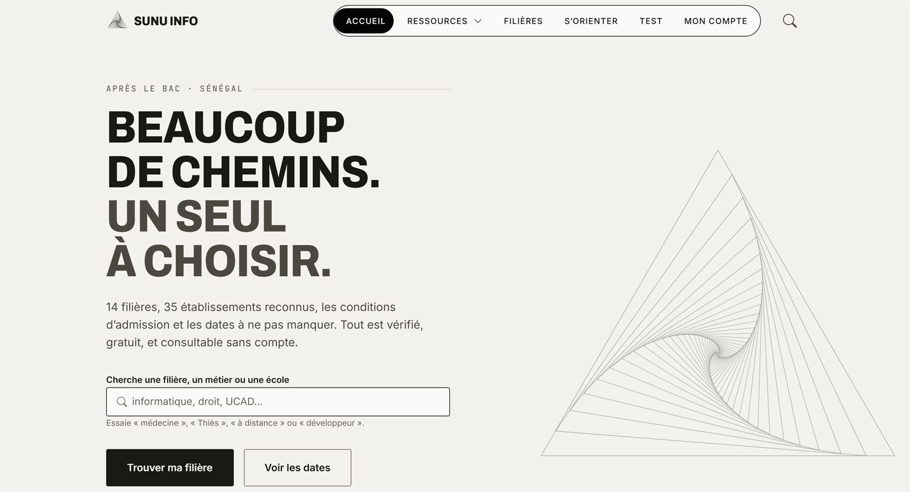
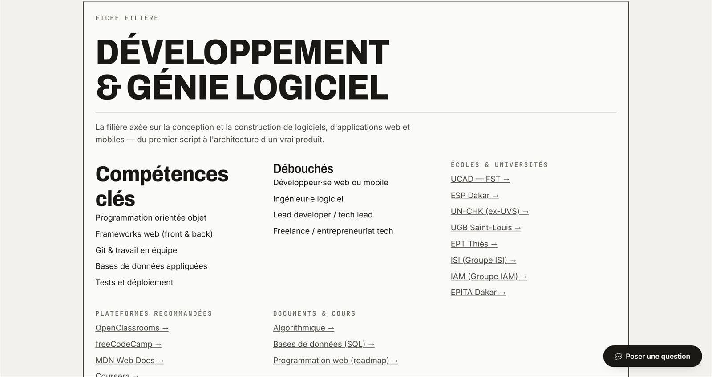
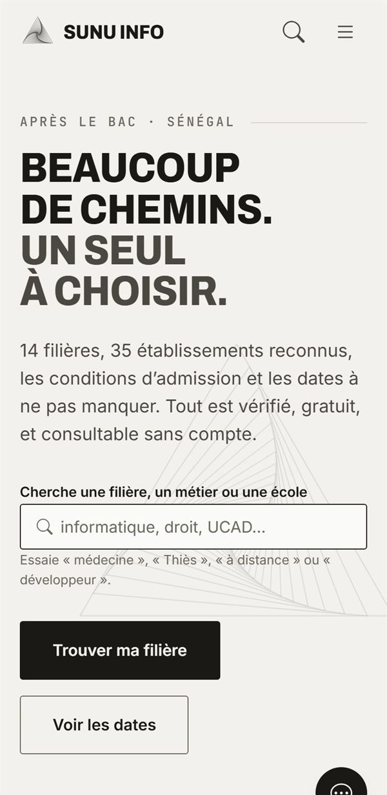

14 fiches filières
Compétences, débouchés, écoles, plateformes de cours et documents, réunis sur une seule page par filière.
Étude de cas
Le portail d'orientation qui aide les bacheliers sénégalais à choisir leur filière, trouver leur école et ne rater aucune date importante.

01
Après le bac, beaucoup d'élèves sénégalais ne savent pas vers quoi s'orienter. Les informations existent, mais elles sont dispersées : sites d'universités, réseaux sociaux, bouche-à-oreille. Comparer les filières, connaître les conditions d'admission ou les dates limites demande de chercher partout.
Je voulais un endroit unique, gratuit et consultable sans créer de compte, qui réponde aux vraies questions d'un nouveau bachelier.
02
Sunu Info rassemble tout le parcours après le bac : découvrir les filières, savoir lesquelles correspondent à son profil, trouver l'école, puis préparer son inscription.
Compétences, débouchés, écoles, plateformes de cours et documents, réunis sur une seule page par filière.
10 questions pour découvrir les filières adaptées à son profil, ses intérêts et ses ambitions.
Campusen, système LMD, séries du bac, bourse nationale, logement étudiant, ISEP et classes préparatoires.
Calendrier académique, concours, calculateur de moyenne et recherche sur tout le site.
Un compte facultatif pour enregistrer ses filières favorites, et un panneau d'administration pour gérer le contenu.
Un assistant qui répond aux questions fréquentes par mots-clés et renvoie vers les bonnes pages.

03

04
Travailler proprement avec Git. Un jour, j'ai modifié une ancienne copie du site sans récupérer les dernières versions, et j'ai cassé la version en ligne. Depuis, je récupère toujours les derniers changements avant de travailler, et je sais revenir en arrière.
Changer d'hébergeur. Le site était d'abord sur Netlify. Je l'ai déplacé vers Vercel en adaptant les fonctions côté serveur, sans interrompre le service.
Penser à l'utilisateur. Le plus difficile n'était pas le code, mais d'organiser beaucoup d'informations pour qu'un élève trouve sa réponse en quelques clics.
Je suis ouvert aux stages et aux projets freelance. Parlons-en.